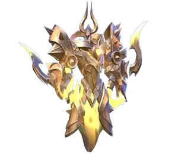
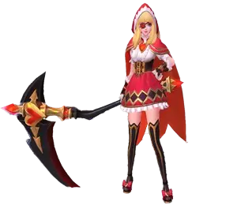

Dano da Explosão: 560 (+200% do Poder Mágico Total)
Descrição: Harith cria um fantasma que libera Sincro Fissão um em direção ao outro, causando dano aos inimigos em seu caminho e criando uma explosão ao colidir.
Dano do Ataque Básico Aprimorado: 225 (+100% do Ataque FÃsico Total) (+100% do Poder Mágico Total)
Efeito de Lentidão: 40%
Redução de Tempo de Recarga ao Acertar: 3 segundos
Descrição: Harith avança em uma direção alvo, ganhando um escudo e aprimorando seu próximo ataque básico para causar dano adicional e retardar inimigos.
Efeito de Lentidão: 70% inicialmente, 35% continuamente
Redução de Tempo de Recarga ao Contato: Sincro Fissão em 1 segundo, Ãmpeto de Chronos em 3 segundos
Descrição: Harith invoca uma fenda multidimensional que retarda significativamente os inimigos e reduz o tempo de recarga de suas habilidades quando ele entra em contato com ela usando Ãmpeto de Chronos.
Engajamento: Comece com Força Zaman para retardar inimigos e criar um campo de batalha favorável. Use Ãmpeto de Chronos para se envolver, ganhando um escudo e causando dano com o ataque básico aprimorado. Em seguida, use Sincro Fissão para causar dano explosivo significativo, mirando na explosão.
Luta Sustentada: Utilize a redução de tempo de recarga de Ãmpeto de Chronos e Força Zaman para ciclar continuamente suas habilidades. O roubo de vida de Persepção Chave manterá Harith saudável durante confrontos prolongados.
Sincro Fissão: Maximize primeiro para dano e limpeza de ondas.
Ãmpeto de Chronos: Aprimore em segundo lugar para mobilidade, força do escudo e redução de tempo de recarga.
Força Zaman: Aprimore quando disponÃvel para melhorar a eficácia geral no combate.
Mais Insights
Harith se destaca tanto em dano explosivo quanto em lutas sustentadas devido à sua capacidade de reduzir os tempos de recarga das habilidades e roubo de vida dos inimigos. Posicionamento adequado, tempo das habilidades e alavancar sua mobilidade são fundamentais para dominar Harith e maximizar seu potencial nas batalhas.
Harith em Mobile Legends: Bang Bang - Prós e Contras
Prós do Harith:
Alta Mobilidade: Ãmpeto de Chronos de Harith permite que ele se mova rapidamente pelo campo de batalha, facilitando o engajamento, desengajamento e esquiva das habilidades inimigas.
Dano Explosivo: Sincro Fissão e o ataque básico aprimorado de Ãmpeto de Chronos causam dano mágico significativo, especialmente quando combinados com Força Zaman.
Redução de Tempo de Recarga: Força Zaman reduz significativamente o tempo de recarga de Ãmpeto de Chronos e Sincro Fissão, permitindo que Harith use suas habilidades repetidamente.
Controle de Ãrea: Força Zaman retarda os inimigos dentro de sua área, facilitando o controle do campo de batalha e pegando inimigos em fuga.
Escudo: Ãmpeto de Chronos concede um escudo que absorve dano, proporcionando maior sobrevivência nas lutas.
Contras do Harith:
Dependência de Mana: As habilidades de Harith consomem uma quantidade significativa de mana, exigindo gerenciamento eficaz de mana ou itens para sustentar suas habilidades em lutas prolongadas.
Dependência de Habilidades: Harith depende fortemente de suas habilidades para causar dano e mobilidade. Se suas habilidades estiverem em recarga, ele se torna vulnerável.
Frágil: Apesar de sua mobilidade e escudo, Harith pode ser relativamente fácil de eliminar se for pego por controle de grupo ou focado pelos inimigos.
Vulnerável a Controle de Grupo: Embora Força Zaman proporcione alguma resiliência, Harith ainda pode ser afetado por atordoamentos, silêncios e outros efeitos de controle de grupo que podem interromper suas combinações.
Dependente de Acerto de Habilidades: O sucesso com Harith requer precisão nas habilidades, especialmente com Sincro Fissão e Ãmpeto de Chronos. Errar essas habilidades pode reduzir sua eficácia nas lutas.
Dependência do Late Game: Harith precisa escalar e adquirir itens para alcançar seu potencial máximo, tornando-o menos eficaz no inÃcio do jogo em comparação com outros heróis.
Como Jogar com Harith em Mobile Legends: Bang Bang
Combate de Curta Distância: Ao contrário de muitos magos, Harith se destaca no combate de curta distância. Suas habilidades, especialmente Sincro Fissão, são projetadas para causar dano significativo quando usadas de perto. Isso exige que você se aproxime dos inimigos, tornando sua mobilidade ainda mais crucial.
Resiliência ao Controle de Grupo: A passiva de Harith, Persepção Chave, reduz a duração dos efeitos de controle de grupo nele. Isso o torna mais resiliente contra atordoamentos e lentidões, permitindo que ele permaneça ativo nas lutas mesmo quando alvo.
InÃcio de Jogo (NÃvel 1-7): Harith pode ser relativamente fraco no inÃcio devido à saÃda de dano limitada e restrições de mana. Concentre-se em farmar minions e evitar confrontos diretos. Use Sincro Fissão para limpar ondas rapidamente e manter-se seguro.
Meio de Jogo (NÃvel 8-12): Uma vez que você tenha alguns itens, comece a se juntar à sua equipe para emboscadas e empurrões de torre. Ãmpeto de Chronos combinado com Força Zaman pode mudar o rumo em confrontos, permitindo que você controle o campo de batalha e garanta eliminações.
Final de Jogo (NÃvel 13+): Fique com sua equipe durante o final do jogo. Use Força Zaman para retardar os inimigos e reduzir seus tempos de recarga, permitindo que você use suas habilidades com mais frequência. Foque em derrubar alvos chave e ajudar sua equipe a empurrar objetivos.
Melhores Combos para Harith em Mobile Legends: Bang Bang
Harith se destaca em dano explosivo e mobilidade, tornando-o um mago versátil e mortal quando jogado corretamente. Aqui estão alguns dos melhores combos para Harith maximizar seu potencial:
Tabela: Melhores Combos para Harith em MLBB
Combos
Passos
Combo Básico de Engajamento e Explosão
Força Zaman (Ultimate): Ative para criar uma fenda multidimensional.
Ãmpeto de Chronos (Habilidade 2): Avance para a fenda em direção ao seu alvo.
Ataque Básico: Realize o ataque básico aprimorado.
Sincro Fissão (Habilidade 1): Use para dano adicional.
Ãmpeto de Chronos (Habilidade 2): Avance novamente para reposicionar/ repetir o ataque.
Combo de Explosão Rápida
Ãmpeto de Chronos (Habilidade 2): Avance em direção ao inimigo.
Ataque Básico: Realize o ataque básico aprimorado.
Sincro Fissão (Habilidade 1): Siga com dano explosivo.
Ãmpeto de Chronos (Habilidade 2): Avance novamente para continuar o assalto ou recuar.
Combo de Luta Prolongada
Força Zaman (Ultimate): Comece com Força Zaman para criar a fenda.
Sincro Fissão (Habilidade 1): Use para causar dano inicial.
Ãmpeto de Chronos (Habilidade 2): Avance para a fenda.
Ataque Básico: Realize o ataque básico aprimorado.
Sincro Fissão (Habilidade 1): Use novamente para maximizar o dano.
Ãmpeto de Chronos (Habilidade 2): Continue avançando e atacando.
Anula completamente a mobilidade de Harith com seu ultimate, tornando difÃcil para Harith se deslocar.
Khufra
Sua forma de bola saltitante impede Harith de se deslocar, efetivamente parando sua mobilidade e dano explosivo.
Phoveus
Suas habilidades punem inimigos que usam habilidades de dash, tornando-o um counter direto ao estilo de jogo de Harith.
Roger
Pode dominar Harith no inÃcio do jogo com seu dano explosivo, mas tende a enfraquecer no final do jogo.
Karrie
Tem dificuldades no inÃcio, mas domina Harith no final do jogo com dano verdadeiro e ataques sustentados.
Franco
Seu ultimate pode prender Harith, impedindo-o de se deslocar e causar dano.
 Uranus
Sua durabilidade e controle de grupo tornam difÃcil para Harith garantir abates.
Kaja
Seu ultimate pode suprimir Harith, parando seus dashs e tornando-o vulnerável a ataques subsequentes.
Akai
Seu ultimate pode empurrar Harith, impedindo-o de usar seus dashs de forma eficaz.
 Ruby
A segunda habilidade e o ultimate reutilizáveis de Ruby podem interromper os dashs de Harith e tirá-lo de posição.
Lolita
Seu escudo pode bloquear as habilidades de Harith, reduzindo sua eficácia nas lutas de equipe.
Chou
Capaz de interromper e deslocar Harith com suas habilidades.
Martis
Suas habilidades de controle de grupo podem impedir Harith de se deslocar.
Jawhead
Pode interromper e deslocar Harith com suas habilidades.
Assassinos
A maioria dos assassinos pode superar Harith em dano devido ao seu alto dano e capacidade de capitalizar suas vulnerabilidades.
Counter de Item
DomÃnio de Gelo
DomÃnio de Gelo: O efeito passivo do DomÃnio de Gelo contraria a segunda habilidade de Harith, reduzindo sua velocidade de ataque e suas capacidades de escudo, tornando-o um item crucial contra ele.
Controle de Grupo: Heróis com habilidades de bloqueio de curto alcance são eficazes para impedir Harith de se deslocar. Utilize heróis com fortes habilidades de controle de grupo para mantê-lo sob controle.
Posicionamento: Esteja atento ao seu posicionamento para evitar ser pego no ultimate de Harith. Espalhe-se para minimizar o dano dele.
Uso de Flash: Melhora a mobilidade de Harith, permitindo fugas rápidas, reposicionamento ou perseguição de inimigos. Combina bem com o Dash Crono para movimentos imprevisÃveis.
Uso de Égide: Adiciona sobrevivência extra nas lutas de equipe, permitindo que Harith entre e saia das batalhas com mais segurança, especialmente ao usar a Força de Zaman.
Uso de Purificar: Contraria equipes com controle de grupo pesado, permitindo que Harith continue seu ataque sem ser impedido, aproveitando ao máximo sua passiva Insight Chave.
Você gostou do nosso Guia do Harith? Há algo que não entendeu ou gostaria de sugerir mudanças? Convidamos você a se juntar à nossa sessão de comentários na página do Alexandre Games Blog. Não hesite em expressar sua opinião, clarificar suas dúvidas e compartilhar sua sugestões. Clique no botão abaixo para começar:


 Dyrroth
Dyrroth Gusion
Gusion